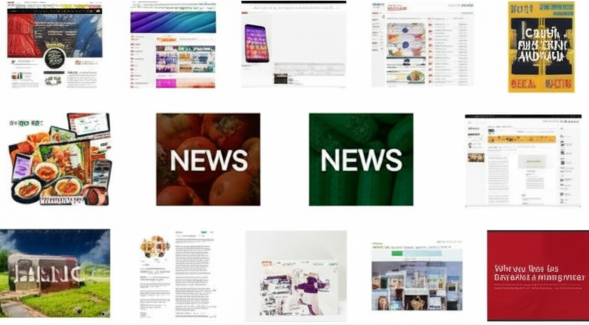

今日的新聞涵蓋了健康、減重、科技以及一些地方新聞。健康方面，著重於兒童肥胖的風險因素，以及糖尿病患者的飲食建議。減重方面，探討了黃瓜的減重功效，以及日本女性成功減重的案例。科技方面，關注了Meta對於台灣用戶資料的聲明，以及Google和iPhone的最新開發進展。此外，還有一些關於金門、澳門的地方新聞值得關注。
多則新聞聚焦健康議題。一篇來自大紀元的報導指出，母親的肥胖會顯著提高孩子成為肥胖兒童的風險。另一篇新聞則討論了糖尿病患者的飲食，建議他們需要定期監測血糖，積極調整飲食並配合運動。 這些新聞強調了健康飲食和體重管理的重要性，特別是對於有孩子的家庭，父母的健康習慣對孩子的影響深遠。
減重是另一個熱門話題。LINE Today轉載的中天新聞報導了黃瓜的減重功效，指出其含有「丙醇二酸」，建議作為前菜食用。Yahoo新聞則分享了日本女性狂瘦43公斤的案例，公開了她的減重方法。這些新聞為希望減重的人們提供了不同的飲食和生活方式建議。
3C 科技新聞方面，自由電子報關注了Meta對於台灣用戶資料的聲明，澄清沒有配合中國政府的審查。同時，也曝光了Google Pixel 10 和 iPhone 17 的最新開發進度。這些新聞反映了科技公司在資料安全和產品創新方面的努力。
綜觀今日新聞，健康、減重與科技是三大重點。健康議題提醒我們關注飲食和生活習慣，特別是對於兒童的健康影響。減重新聞則提供了多樣化的飲食和運動建議。科技新聞則揭示了科技公司在資料安全和產品創新方面的最新動態。此外，地方新聞也提供了不同地區的社會民生資訊。這些新聞反映了當前社會關注的重點，也為我們提供了有用的資訊和啟示。